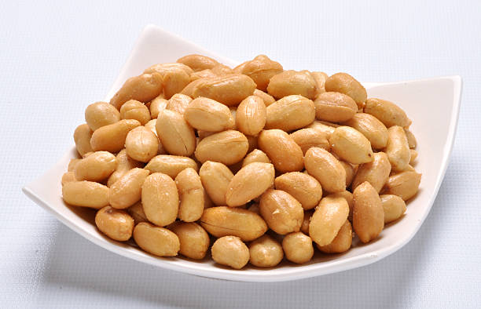
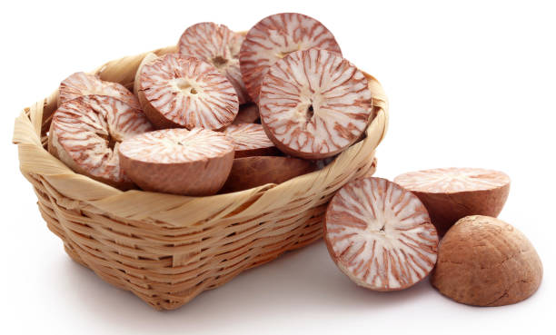

<html lang="en">

</html>

<head>
    <meta charset="UTF-8">
    <meta name="Generator" content="EditPlus®">
    <meta name="Author" content="">
    <meta name="Keywords" content="">
    <meta name="Description" content="">
    <meta name="viewport" content="width=device-width, initial-scale=1.0">
    <title>AD-GROWN</title>
    <style>
        @media (min-width: 1000px) {
            #a {
                display: flex;
            }

            .b {
                width: 280%;
            }

            .c {
                width: 180%;
            }
        }


        /* Style the container for the Google Translate Element */
        #google_translate_element_container {
            position: fixed;
            bottom: 10px;
            right: 10px;
            z-index: 9999;
            transition: box-shadow 0.3s ease;
            /* Add transition for a smoother effect */
        }

        /* Style the Google Translate Element */
        #google_translate_element {
            border: 1px solid rgba(255, 174, 0);
            /* Cyan border color */
            padding: 10px;
            background-color: #f0f8ff;
            /* AliceBlue background color */
            border-radius: 5px;
            box-shadow: 0 0 10px rgba(255, 174, 0);
            /* Initial box-shadow */
        }

        /* Add box-shadow when hovering over the container */
        #google_translate_element_container:hover {
            box-shadow: 0 0 5px rgb(255, 174, 0),
                0 0 25px rgb(255, 174, 0),
                0 0 50px rgb(255, 174, 0);
        }

        @media (max-width: 460px) {
            #imgX {
                height: 200px;
                width: 300px;
            }

        }
    </style>
    <script type="text/javascript"
        src="https://translate.google.com/translate_a/element.js?cb=googleTranslateElementInit"></script>
    <script type="text/javascript">
        function googleTranslateElementInit() {
            new google.translate.TranslateElement({ pageLanguage: 'tel', layout: google.translate.TranslateElement.InlineLayout }, 'google_translate_element');
        }
    </script>
</head>

<body>
    <div id="google_translate_element_container">
        <div id="google_translate_element"></div>
    </div>
    <!--మొక్కజొన్న అని కూడా పిలువబడే మొక్కజొన్న, ప్రపంచంలోని అనేక ప్రాంతాలలో ప్రధానమైన పంట.  మొక్కజొన్న యొక్క పెరుగుతున్న విధానం నాటడం నుండి కోత వరకు అనేక దశలను కలిగి ఉంటుంది.  మొక్కజొన్న సాగు విధానం యొక్క సంక్షిప్త అవలోకనం ఇక్కడ ఉంది:

 నేల తయారీ: 6.0-7.5 pHతో బాగా ఎండిపోయిన నేలలో మొక్కజొన్న బాగా పెరుగుతుంది.  మట్టిని 6-8 అంగుళాల లోతు వరకు దున్నాలి మరియు ఏవైనా కలుపు మొక్కలు లేదా రాళ్లను తొలగించాలి.

 నాటడం: మొక్కజొన్న సాధారణంగా వసంతకాలంలో పండిస్తారు, మంచు ప్రమాదం దాటిన తర్వాత.  విత్తనాలను 1-2 అంగుళాల లోతులో, 30-36 అంగుళాల దూరంలో ఉన్న వరుసలలో నాటాలి.

 అంకురోత్పత్తి: మొక్కజొన్న విత్తనాలు 7-10 రోజులలో మొలకెత్తుతాయి, నేల తేమగా మరియు ఉష్ణోగ్రత తగినంతగా ఉంటే.  విత్తనం ఒక చిన్న రూట్ మరియు రెమ్మను పంపుతుంది, ఇది చివరికి మొక్కజొన్న మొక్కగా పెరుగుతుంది.

 పెరుగుదల: మొక్కజొన్న మొక్క పెరుగుతూనే ఉంటుంది, ఆకులు మరియు కాండాలను అభివృద్ధి చేస్తుంది.  ఇది కూడా tassels మరియు చెవులు ఉత్పత్తి ప్రారంభమవుతుంది.

 పరాగసంపర్కం: మొక్క పైభాగంలో ఉన్న టాసెల్స్‌లో మగ పువ్వులు ఉంటాయి, చెవుల్లో ఆడ పువ్వులు ఉంటాయి.  టసెల్స్ నుండి పుప్పొడి చెవుల పట్టుపై పడినప్పుడు పరాగసంపర్కం జరుగుతుంది.

 చెవి అభివృద్ధి: చెవులు పరాగసంపర్కం జరిగిన తర్వాత, అవి కెర్నలు అభివృద్ధి చెందడం ప్రారంభిస్తాయి.  ప్రతి కెర్నల్ ఒక పట్టుకు జోడించబడి ఉంటుంది, ఇది చివరికి ఎండిపోయి పడిపోతుంది.

 హార్వెస్టింగ్: మొక్కజొన్న సాధారణంగా శరదృతువులో పండిస్తారు, చెవులు పూర్తిగా పరిపక్వం చెందినప్పుడు మరియు కాండాలు మరియు ఆకులు గోధుమ రంగులోకి మారుతాయి.  చెవులను చేతితో లేదా యాంత్రిక హార్వెస్టర్ ఉపయోగించి పండిస్తారు.

 మొత్తంమీద, మొక్కజొన్న సాగు విధానంలో జాగ్రత్తగా నేల తయారీ, సరైన సమయంలో నాటడం మరియు అంకురోత్పత్తి, పెరుగుదల, పరాగసంపర్కం మరియు చెవి అభివృద్ధికి సరైన పరిస్థితులను నిర్ధారించడం వంటివి ఉంటాయి.
jowar
జొన్న అని కూడా పిలువబడే జొన్న, దాని ధాన్యాల కోసం విస్తృతంగా పండించే తృణధాన్యాల పంట. జోవర్ పెరుగుదల ప్రక్రియను అనేక దశలుగా విభజించవచ్చు:

విత్తన ఎంపిక మరియు నాటడం: చేతితో లేదా మెకానికల్ ప్లాంటర్‌ని ఉపయోగించి నాటడానికి అధిక-నాణ్యత గల విత్తనాలను ఎంపిక చేస్తారు. విత్తనాలు బాగా తయారుచేసిన నేలలో, సాధారణంగా వరుసలలో పండిస్తారు.

అంకురోత్పత్తి మరియు మొలక దశ: నాటిన తరువాత, జొన్న గింజలు మొలకెత్తుతాయి మరియు మొలకలుగా పెరుగుతాయి. ఈ దశలో, బలమైన రూట్ వ్యవస్థను ఏర్పాటు చేయడానికి మరియు ఆరోగ్యకరమైన ఆకులను అభివృద్ధి చేయడానికి మొలకలకు తగినంత తేమ, వెచ్చదనం మరియు పోషకాలు అవసరం.

ఏపుగా పెరగడం: జొన్న మొక్కలు మంచి రూట్ వ్యవస్థను ఏర్పాటు చేసుకున్న తర్వాత, అవి ఏపుగా పెరగడంపై దృష్టి పెడతాయి. మొక్కలు పెద్దవిగా పెరుగుతాయి మరియు కిరణజన్య సంయోగక్రియ మరియు ధాన్యం ఉత్పత్తికి ముఖ్యమైన ఆకులు మరియు కొమ్మలను అభివృద్ధి చేస్తాయి. మొక్కలు ఆరోగ్యకరమైన పెరుగుదలను ప్రోత్సహించడానికి క్రమం తప్పకుండా నీటిపారుదల మరియు ఫలదీకరణం చేయబడతాయి.

పుష్పించే మరియు ధాన్యం ఏర్పడటం: దాదాపు 45-60 రోజుల పెరుగుదల తర్వాత, జొన్న మొక్కలు పుష్పాలను ఉత్పత్తి చేయడం ప్రారంభిస్తాయి. పువ్వులు గాలి లేదా స్వీయ-పరాగసంపర్కం ద్వారా పరాగసంపర్కం చేయబడతాయి. పరాగసంపర్కం తరువాత, పువ్వులు ధాన్యాలుగా అభివృద్ధి చెందుతాయి, ఇవి స్పైక్ లాంటి పానికిల్‌లో ఉంటాయి.

ధాన్యం పరిపక్వత మరియు హార్వెస్టింగ్: ధాన్యాలు పరిపక్వం చెందడానికి దాదాపు 90-120 రోజులు పడుతుంది, ఈ సమయంలో పానికిల్ లోపల ధాన్యాలు పెరుగుతాయి మరియు అభివృద్ధి చెందుతాయి. పానికిల్స్ ఆకుపచ్చ నుండి గోధుమ రంగులోకి మారుతాయి, అవి పూర్తిగా పరిపక్వం చెందాయని సూచిస్తున్నాయి. జొన్నను సాధారణంగా మొక్క నుండి కాయలను కత్తిరించి వాటిని నూర్పిడి చేయడం ద్వారా ధాన్యాలను మొక్కల పదార్థం నుండి వేరు చేయడం ద్వారా పండిస్తారు.

పంటకోత తర్వాత ప్రాసెసింగ్: పంట కోసిన తర్వాత, ధాన్యాలను శుభ్రం చేసి, ఏదైనా చెత్త లేదా దెబ్బతిన్న గింజలను తొలగించడానికి క్రమబద్ధీకరించబడతాయి. ధాన్యాలను ఆహారం, పశుగ్రాసం లేదా జీవ ఇంధన ఉత్పత్తికి ఉపయోగించవచ్చు.

మొత్తంమీద, జోవర్ యొక్క పెరుగుదల ఉష్ణోగ్రత, తేమ మరియు సూర్యకాంతి వంటి పర్యావరణ కారకాల సంక్లిష్ట పరస్పర చర్యను కలిగి ఉంటుంది, అలాగే మొక్క యొక్క పెరుగుదల మరియు అభివృద్ధిని నిర్ణయించే జన్యుపరమైన కారకాలు. ఆరోగ్యకరమైన మరియు ఉత్పాదక పంటను నిర్ధారించడానికి తగినంత నీటి నిర్వహణ, పోషకాల నిర్వహణ మరియు తెగులు నియంత్రణ చాలా ముఖ్యమైనవి.
సొర్గుమ్ 
పెడి 
చిల్లి 
మేజ్ -->
    <CENTER>
        <H1><strong>1. COCONUT / 1.नारियल</strong></H1>
    </CENTER>
    <center>
        
    </center>

    <DIV id="a" style="color:blue;justify-content:space-evenly;">
        <CENTER>
            <h2 class="notranslate" style="border:3px solid orange; color:BLACK;">
                <CENTER>
                    <h3>ENGLISH</h3>
                </CENTER>
                Coconuts are versatile palms widely cultivated in tropical regions, particularly in India. They thrive
                in sandy, well-drained soils and are known for their numerous uses, including food, oil, and crafts.
                Below is the step-by-step growing mechanism for coconuts from seed selection to harvesting:<br><br>

                1] <U>Seed Selection:</U> <br>Coconut cultivation begins with the selection of healthy, mature coconuts.
                The best seeds are those that float in water, indicating they are fresh and viable. The seeds should
                ideally be from hybrid or high-yielding varieties to ensure better productivity.<br><br>


                2] <U>Pre-Germination Treatment:</U> <br>
                Before planting, the selected coconuts can be soaked in water for 2-3 days to enhance germination. This
                treatment helps soften the hard outer shell, making it easier for the seed to sprout.<br><br>


                3] <U>Planting:</U> <br>
                Coconuts can be planted directly in the soil or in nursery beds. When planting in the field, they should
                be positioned upright in pits that are about 2-3 feet deep and spaced 7-10 meters apart. The ideal
                planting time is at the beginning of the monsoon season.<br><br>


                4] <U>Germination:</U><br>
                Germination typically occurs 3-6 months after planting. The seed absorbs moisture, and the embryo starts
                to develop. The first visible sign is the emergence of a shoot, while the roots begin to grow downward.
                Coconuts often take 6-12 months to fully sprout.<br><br>


                5] <U>Initial Growth:</U> <br>
                After germination, the coconut palm enters the vegetative phase. The shoot grows upward, and leaves
                begin to emerge from the top. Young palms require protection from strong winds and direct sunlight.
                During this phase, it's crucial to keep the soil moist and free from weeds.<br><br>

                6] <U>Development of Leaves and Roots:</U><br>
                As the palm grows, it develops a fan-shaped crown of leaves. Coconuts can produce up to 30 leaves a
                year. The root system expands horizontally and vertically, helping the palm anchor itself and access
                nutrients and water.<br><br>

                7] <U>Flowering:</U><br>
                Coconut palms begin to flower around 5-7 years after planting. They produce both male and female flowers
                on the same inflorescence. Pollination occurs naturally through wind and insects. The flowers are
                usually white or yellow, and successful pollination leads to fruit development.<br><br>

                8] <U>Fruit Development:</U><br>
                Once pollinated, the female flowers develop into coconuts. The fruit takes about 11-12 months to mature.
                Initially green, coconuts turn brown as they ripen. During this time, the palm continues to grow and may
                produce multiple clusters of coconuts.<br><br>

                9] <U>Water and Nutrient Management:</U><br>
                Coconut palms require regular watering, especially in dry periods. They benefit from balanced
                fertilization with nitrogen, phosphorus, and potassium to enhance fruit production. Organic matter, such
                as compost, can be added to improve soil fertility.<br><br>

                10] <U>Pest and Disease Management:</U><br>
                Coconuts are susceptible to pests like the coconut mite and diseases such as bud rot. Regular monitoring
                is essential. Integrated Pest Management (IPM) practices, including biological control and the use of
                neem-based pesticides, can help manage infestations effectively.<br><br>

                11] <U>Harvesting:</U><br>
                Coconuts are usually ready for harvest 6-12 months after flowering. Harvesting is done manually, using
                long poles with hooks to pick mature coconuts from the palm. It is important to harvest at the right
                time to ensure optimal quality and taste.<br><br>

                12] <U>Post-Harvest Processing:</U><br>
                After harvesting, coconuts are processed based on their intended use. For example, they can be cracked
                open for water and meat or dried for copra production. Proper handling and storage are crucial to
                prevent spoilage.<br><br>

                Throughout the growing process, coconuts require adequate sunlight, water, and nutrient management to
                thrive, ensuring a bountiful harvest for various uses.
            </h2>
        </CENTER>

        <div class="b" id="translateThisSection" style="color:blACK; text-align:center;">
            <center>
                <h3 style="border:3px solid orange; color:BLACK;">
                    <CENTER>
                        <h1>हिंदी</h1>
                    </CENTER>
                    नारियल बहुमुखी ताड़ के पेड़ हैं जिनकी खेती व्यापक रूप से उष्णकटिबंधीय क्षेत्रों में की जाती है,
                    खासकर भारत में। वे रेतीली, अच्छी जल निकासी वाली मिट्टी में पनपते हैं और भोजन, तेल और शिल्प सहित अपने
                    कई उपयोगों के लिए जाने जाते हैं। बीज चयन से लेकर कटाई तक नारियल के लिए चरण-दर-चरण विकास तंत्र नीचे
                    दिया गया है:<br><br>
                    1] <U>बीज चयन: </U> <br>नारियल की खेती स्वस्थ, परिपक्व नारियल के चयन से शुरू होती है। सबसे अच्छे बीज
                    वे होते हैं जो पानी में तैरते हैं, जो दर्शाता है कि वे ताज़ा और व्यवहार्य हैं। बेहतर उत्पादकता
                    सुनिश्चित करने के लिए बीज आदर्श रूप से संकर या अधिक उपज देने वाली किस्मों के होने चाहिए।<br><br>
                    2] <U>अंकुरण पूर्व उपचार: </U> <br>रोपण से पहले, अंकुरण बढ़ाने के लिए चयनित नारियल को 2-3 दिनों के
                    लिए पानी में भिगोया जा सकता है। यह उपचार कठोर बाहरी आवरण को नरम करने में मदद करता है, जिससे बीज को
                    अंकुरित होने में आसानी होती है।<br><br>
                    3] <U>पौधारोपण: </U> <br>नारियल को सीधे मिट्टी में या नर्सरी बेड में लगाया जा सकता है। खेत में रोपण
                    करते समय, उन्हें लगभग 2-3 फीट गहरे और 7-10 मीटर की दूरी पर बने गड्ढों में सीधा खड़ा किया जाना चाहिए।
                    रोपण का आदर्श समय मानसून के मौसम की शुरुआत है।<br><br>
                    4] <U> अंकुरण: </U> <br>अंकुरण आमतौर पर रोपण के 3-6 महीने बाद होता है। बीज नमी सोख लेता है और भ्रूण
                    विकसित होने लगता है। पहला दिखाई देने वाला संकेत एक अंकुर का उभरना है, जबकि जड़ें नीचे की ओर बढ़ने
                    लगती हैं। नारियल को पूरी तरह से अंकुरित होने में अक्सर 6-12 महीने लगते हैं।<br><br>
                    5] <U> प्रारंभिक विकास: </U> <br>अंकुरण के बाद, नारियल का पेड़ वनस्पति चरण में प्रवेश करता है। अंकुर
                    ऊपर की ओर बढ़ता है और ऊपर से पत्तियाँ निकलने लगती हैं। युवा हथेलियों को तेज़ हवाओं और सीधी धूप से
                    सुरक्षा की आवश्यकता होती है। इस चरण के दौरान, मिट्टी को नम और खरपतवारों से मुक्त रखना महत्वपूर्ण
                    है।<br><br>
                    6] <U>पत्तियों और जड़ों का विकास: </U> <br>जैसे-जैसे ताड़ बढ़ता है, इसमें पत्तों का पंखे के आकार का
                    मुकुट विकसित हो जाता है। नारियल एक वर्ष में 30 पत्तियां तक ​​पैदा कर सकता है। जड़ प्रणाली क्षैतिज और
                    लंबवत रूप से फैलती है, जिससे ताड़ को खुद को स्थिर करने और पोषक तत्वों और पानी तक पहुंचने में मदद
                    मिलती है।<br><br>
                    7] <U> फूलना: </U> <br>नारियल के ताड़ के पेड़ रोपण के लगभग 5-7 साल बाद फूलने लगते हैं। वे एक ही
                    पुष्पक्रम पर नर और मादा दोनों फूल पैदा करते हैं। परागण प्राकृतिक रूप से हवा और कीड़ों के माध्यम से
                    होता है। फूल आमतौर पर सफेद या पीले होते हैं, और सफल परागण से फल का विकास होता है।<br><br>
                    8] <U>फलों का विकास: </U> <br>परागण के बाद मादा फूल विकसित होकर नारियल बन जाते हैं। फल को पकने में
                    लगभग 11-12 महीने लगते हैं। प्रारंभ में हरे, नारियल पकने पर भूरे रंग के हो जाते हैं। इस समय के दौरान,
                    ताड़ का पेड़ बढ़ता रहता है और नारियल के कई गुच्छे पैदा हो सकते हैं।<br><br>
                    9] <U>जल एवं पोषक तत्व प्रबंधन: </U> <br>नारियल के पेड़ों को नियमित रूप से पानी देने की आवश्यकता
                    होती है, विशेषकर शुष्क अवधि में। फलों के उत्पादन को बढ़ाने के लिए उन्हें नाइट्रोजन, फास्फोरस और
                    पोटेशियम के साथ संतुलित उर्वरक से लाभ होता है। मिट्टी की उर्वरता में सुधार के लिए खाद जैसे कार्बनिक
                    पदार्थ मिलाए जा सकते हैं।<br><br>
                    10] <U>कीट एवं रोग प्रबंधन: </U> <br>नारियल नारियल घुन जैसे कीटों और कली सड़न जैसी बीमारियों के
                    प्रति संवेदनशील होते हैं। नियमित निगरानी जरूरी है. जैविक नियंत्रण और नीम-आधारित कीटनाशकों के उपयोग
                    सहित एकीकृत कीट प्रबंधन (आईपीएम) प्रथाएं संक्रमण को प्रभावी ढंग से प्रबंधित करने में मदद कर सकती
                    हैं।<br><br>
                    11] <U>कटाई: </U> <br>नारियल आमतौर पर फूल आने के 6-12 महीने बाद कटाई के लिए तैयार हो जाते हैं। कटाई
                    मैन्युअल रूप से की जाती है, ताड़ से परिपक्व नारियल तोड़ने के लिए हुक वाले लंबे डंडों का उपयोग किया
                    जाता है। सर्वोत्तम गुणवत्ता और स्वाद सुनिश्चित करने के लिए सही समय पर कटाई करना महत्वपूर्ण
                    है।<br><br>
                    12] <U>कटाई के बाद का प्रसंस्करण: </U> <br>कटाई के बाद, नारियल को उनके इच्छित उपयोग के आधार पर
                    संसाधित किया जाता है। उदाहरण के लिए, उन्हें पानी और मांस के लिए तोड़ा जा सकता है या खोपरा उत्पादन के
                    लिए सुखाया जा सकता है। खराब होने से बचाने के लिए उचित रख-रखाव और भंडारण महत्वपूर्ण है।<br><br>

                    बढ़ती प्रक्रिया के दौरान, नारियल को पनपने के लिए पर्याप्त धूप, पानी और पोषक तत्व प्रबंधन की आवश्यकता
                    होती है, जिससे विभिन्न उपयोगों के लिए भरपूर फसल सुनिश्चित होती है।
                </h3>
            </center>
            <audio controls src="TELANGANA/TP AUDIO\jowar.m4a"></audio>
            <h2>सुनना</h2>
        </div>

    </DIV>

    <CENTER>
        <H1><strong>2. GROUNDNUT / 2.मूंगफली</strong></H1>
    </CENTER>
    <center>
        
    </center>

    <DIV id="a" style="color:blue;  justify-content:space-evenly;">
        <CENTER>
            <h2 class="notranslate" style="border:3px solid orange; color:BLACK;">
                <CENTER>
                    <h3>ENGLISH</h3>
                </CENTER>

                Groundnuts, commonly known as peanuts, are a leguminous crop that is widely cultivated in India. They
                are valued for their edible seeds, oil, and protein content. Below is the step-by-step growing mechanism
                for groundnuts from seed selection to harvesting:<br><br>
                1] <U> Seed Selection:</U> <br>
                Groundnut cultivation begins with the selection of high-quality seeds that are disease-free and have
                high germination rates. Varieties should be chosen based on local conditions and desired yield.
                Certified seeds from reputable sources are recommended.<br><br>
                2] <U> Soil Preparation:</U> <br>
                Groundnuts prefer well-drained, sandy loam to loamy soil. Before planting, the soil should be plowed and
                leveled. Incorporating organic matter, such as compost, improves soil fertility and structure. Soil pH
                should be maintained between 6.0 and 6.5 for optimal growth.<br><br>
                3] <U> Sowing: </U> <br>
                Groundnut seeds are typically sown at the beginning of the monsoon season, around June to July in India.
                Seeds should be planted 1-2 inches deep, with a spacing of 20-30 cm between plants and rows. This
                ensures adequate air circulation and sunlight.<br><br>
                4] <U> Germination:</U> <br>
                Germination occurs within 7-10 days after sowing, depending on soil moisture and
                temperature. The seed absorbs water, swelling and eventually leading to the emergence of the shoot and
                root. Adequate soil moisture is critical during this phase.<br><br>
                5] <U> Vegetative Growth: </U> <br>
                After germination, groundnut plants enter a rapid vegetative growth phase. They
                develop a sprawling habit, producing numerous leaves that capture sunlight for photosynthesis. Root
                development is crucial, as groundnuts are unique in that they form pegs that grow into the soil.<br><br>
                6] <U> Flowering: </U> <br>
                Groundnut plants typically flower about 30-40 days after sowing. The flowers are small,
                yellow, and grow close to the ground. After pollination, the fertilized flowers develop into pegs, which
                elongate and penetrate the soil to form pods.<br><br>
                7] <U> Pod Formation: </U> <br>
                The pegs that grow into the soil develop into pods, each containing 1-4 seeds. This
                process occurs about 60-90 days after planting. The plant requires adequate moisture and nutrients
                during this critical phase to support pod development.<br><br>
                8] <U> Water and Nutrient Management: </U> <br>
                Groundnuts require moderate irrigation, particularly during flowering and
                pod development. Fertilization with balanced NPK (nitrogen, phosphorus, potassium) fertilizers is
                essential to ensure healthy growth. Organic amendments can further enhance soil fertility.<br><br>
                9] <U> Pest and Disease Management: </U> <br>
                Common pests include leaf minor and thrips, while diseases like wilt and
                rust can affect the crop. Regular monitoring is essential. Integrated Pest Management (IPM) strategies,
                including crop rotation and biological control, can help manage pests effectively.<br><br>
                10] <U> Maturation: </U> <br>
                Groundnuts typically mature about 90-150 days after planting, depending on the variety. The
                leaves begin to yellow, indicating that the pods are ready for harvest. Proper timing is crucial to
                prevent over-maturation, which can lead to pod splitting.<br><br>
                11] <U> Harvesting: </U> <br>
                Harvesting is done manually or mechanically, depending on the scale of cultivation. The
                plants are carefully uprooted to avoid damaging the pods. Harvesting should occur on a dry day to
                minimize soil clinging to the pods.<br><br>
                12] <U> Post-Harvest Processing: </U> <br>
                After harvesting, groundnuts should be sun-dried to reduce moisture content.
                This step is crucial for preventing spoilage and enhancing storage life. Once dried, the pods can be
                stored in cool, dry conditions to protect against pests and moisture.<br><br>
                Throughout the growing process, groundnuts require careful management of soil moisture, nutrients, and
                pest control to ensure a healthy and productive crop. Their unique growth habit, with pegs forming
                underground pods, makes them an interesting and valuable crop.
            </h2>
        </CENTER>
        <div class="b" id="translateThisSection" style="color:blACK;   text-align:center;float:right;">
            <center>
                <h3 style="border:3px solid orange; color:BLACK;">
                    <CENTER>
                        <h1>हिंदी</h1>
                    </CENTER>
                    मूंगफली, जिसे आमतौर पर मूंगफली के नाम से जाना जाता है, एक फलीदार फसल है जिसकी खेती भारत में व्यापक
                    रूप से की जाती है। वे अपने खाद्य बीज, तेल और प्रोटीन सामग्री के लिए मूल्यवान हैं। बीज चयन से लेकर
                    कटाई तक मूंगफली की चरण-दर-चरण खेती की विधि नीचे दी गई है:<br><br>

                    1] <U> बीज चयन: </U> <br>मूंगफली की खेती उच्च गुणवत्ता वाले बीजों के चयन से शुरू होती है जो रोग
                    मुक्त होते हैं और जिनमें अंकुरण दर अधिक होती है। किस्मों का चयन स्थानीय परिस्थितियों और वांछित उपज
                    के आधार पर किया जाना चाहिए। प्रतिष्ठित स्रोतों से प्रमाणित बीजों की अनुशंसा की जाती है।<br><br>

                    2] <U> मिट्टी की तैयारी: </U> <br>मूंगफली अच्छी जल निकासी वाली, बलुई दोमट से दोमट मिट्टी पसंद करती
                    है। रोपण से पहले मिट्टी को जुताई करके समतल कर लेना चाहिए। खाद जैसे कार्बनिक पदार्थों को शामिल करने
                    से मिट्टी की उर्वरता और संरचना में सुधार होता है। इष्टतम विकास के लिए मिट्टी का पीएच 6.0 और 6.5 के
                    बीच बनाए रखा जाना चाहिए।<br><br>

                    3] <U> बुआई: </U> <br>भारत में मूंगफली के बीज आम तौर पर मानसून के मौसम की शुरुआत में, जून से जुलाई
                    के आसपास बोए जाते हैं। बीजों को 1-2 इंच गहराई में, पौधों और पंक्तियों के बीच 20-30 सेमी की दूरी पर
                    बोना चाहिए। इससे पर्याप्त वायु संचार और सूर्य का प्रकाश सुनिश्चित होता है।<br><br>

                    4] <U>अंकुरण: </U> <br>अंकुरण बुआई के 7-10 दिनों के भीतर होता है, जो मिट्टी की नमी और तापमान पर
                    निर्भर करता है। बीज पानी को अवशोषित करता है, फूलता है और अंततः अंकुर और जड़ के उद्भव की ओर ले जाता
                    है। इस चरण के दौरान पर्याप्त मिट्टी की नमी महत्वपूर्ण है।<br><br>

                    5] <U>वानस्पतिक विकास: </U> <br>अंकुरण के बाद, मूंगफली के पौधे तेजी से वानस्पतिक विकास चरण में
                    प्रवेश करते हैं। वे फैलने की आदत विकसित करते हैं, जिससे असंख्य पत्तियाँ उत्पन्न होती हैं जो प्रकाश
                    संश्लेषण के लिए सूर्य के प्रकाश को ग्रहण करती हैं। जड़ों का विकास महत्वपूर्ण है, क्योंकि मूंगफली इस
                    मायने में अद्वितीय है कि वे खूंटियाँ बनाती हैं जो मिट्टी में उगती हैं।<br><br>

                    6] <U>फूल आना: </U> <br>मूंगफली के पौधों में आमतौर पर बुआई के लगभग 30-40 दिन बाद फूल आते हैं। फूल
                    छोटे, पीले और जमीन के करीब उगते हैं। परागण के बाद, निषेचित फूल खूंटियों में विकसित होते हैं, जो
                    बढ़ते हैं और मिट्टी में घुसकर फलियां बनाते हैं।<br><br>

                    7] <U>फली निर्माण: </U> <br>मिट्टी में उगने वाली खूंटियाँ फली में बदल जाती हैं, प्रत्येक में 1-4 बीज
                    होते हैं। यह प्रक्रिया रोपण के लगभग 60-90 दिन बाद होती है। फली के विकास में सहायता के लिए इस
                    महत्वपूर्ण चरण के दौरान पौधे को पर्याप्त नमी और पोषक तत्वों की आवश्यकता होती है।
                    <br><br>

                    8] <U>जल और पोषक तत्व प्रबंधन: </U> <br>मूंगफली को मध्यम सिंचाई की आवश्यकता होती है, खासकर फूल आने
                    और फली बनने के दौरान। स्वस्थ विकास सुनिश्चित करने के लिए संतुलित एनपीके (नाइट्रोजन, फास्फोरस,
                    पोटेशियम) उर्वरकों के साथ उर्वरक आवश्यक है। जैविक संशोधन मिट्टी की उर्वरता को और बढ़ा सकते
                    हैं।<br><br>

                    9] <U>कीट और रोग प्रबंधन: </U> <br>सामान्य कीटों में लीफ माइनर और थ्रिप्स शामिल हैं, जबकि विल्ट और
                    रस्ट जैसी बीमारियाँ फसल को प्रभावित कर सकती हैं। नियमित निगरानी जरूरी है. फसल चक्र और जैविक नियंत्रण
                    सहित एकीकृत कीट प्रबंधन (आईपीएम) रणनीतियाँ, कीटों को प्रभावी ढंग से प्रबंधित करने में मदद कर सकती
                    हैं।
                    <br><br>

                    10]<U>परिपक्वता: </U> <br>मूंगफली आम तौर पर किस्म के आधार पर रोपण के लगभग 90-150 दिन बाद पकती है।
                    पत्तियाँ पीली पड़ने लगती हैं, जो दर्शाता है कि फलियाँ कटाई के लिए तैयार हैं। अति-परिपक्वता को रोकने
                    के लिए उचित समय महत्वपूर्ण है, जिससे फली का विभाजन हो सकता है।<br><br>

                    11]<U>कटाई: </U> <br>खेती के पैमाने के आधार पर कटाई मैन्युअल या यंत्रवत् की जाती है। फलियों को
                    नुकसान पहुंचने से बचाने के लिए पौधों को सावधानीपूर्वक उखाड़ा जाता है। फलियों पर मिट्टी का चिपकना कम
                    करने के लिए कटाई सूखे दिन पर करनी चाहिए।<br><br>

                    12]<U>कटाई के बाद का प्रसंस्करण: </U> <br>कटाई के बाद नमी की मात्रा कम करने के लिए मूंगफली को धूप
                    में सुखाना चाहिए। यह कदम खराब होने से बचाने और भंडारण जीवन को बढ़ाने के लिए महत्वपूर्ण है। एक बार
                    सूखने के बाद, फलियों को कीटों और नमी से बचाने के लिए ठंडी, सूखी स्थिति में संग्रहित किया जा सकता
                    है।<br><br>

                    बढ़ती प्रक्रिया के दौरान, मूंगफली को स्वस्थ और उत्पादक फसल सुनिश्चित करने के लिए मिट्टी की नमी, पोषक
                    तत्वों और कीट नियंत्रण के सावधानीपूर्वक प्रबंधन की आवश्यकता होती है। भूमिगत फली बनाने वाली खूंटियों
                    के साथ उनकी अनोखी वृद्धि की आदत, उन्हें एक दिलचस्प और मूल्यवान फसल बनाती है।

                </h3>
            </center>
            <audio controls src="TELANGANA/TP AUDIO\paddy.m4a"></audio>
            <h2>सुनना</h2>
        </div>

    </DIV>

    <CENTER>
        <H1><strong>3. COTTON / 3.कपास</strong></H1>
    </CENTER>
    <center>
        
    </center>
    <DIV id="a" style="color:blue; justify-content:space-evenly;">
        <CENTER>
            <h2 class="notranslate" style="border:3px solid orange; color:BLACK;">
                <CENTER>
                    <h3>ENGLISH</h3>
                </CENTER>
                Cotton is a crucial cash crop in India, known for its fibers used in textiles. Here’s a detailed
                step-by-step mechanism for growing cotton from seed selection to harvesting:<br><br>
                1] <U>Seed Selection and Sowing:</U> <br>
                Begin by selecting high-quality, certified cotton seeds that are disease-resistant and suited to your
                region's climate. Cotton is typically sown in the kharif season (April to June). Seeds should be planted
                1-2 inches deep in well-drained, fertile soil, with rows spaced 75-90 cm apart.<br><br>
                2] <U>Germination:</U> <br>
                After sowing, cotton seeds absorb moisture and begin to swell. The radicle (embryonic root) emerges
                first, followed by the shoot. Germination usually occurs within 7-10 days under optimal soil
                temperatures of 20°C to 30°C.<br><br>
                3] <U>Vegetative Growth:</U> <br>
                Once germinated, the cotton plant enters the vegetative growth phase. The plant develops a sturdy stem
                and broad leaves. Adequate sunlight and water are essential during this phase for healthy growth, as
                cotton plants can reach heights of 1-2 meters.<br><br>
                4] <U>Flowering:</U> <br>
                Approximately 50-60 days after sowing, cotton plants start to flower. The flowers are initially white
                and then turn pink before falling off, leading to the formation of cotton bolls. This phase is critical
                for pollination, which primarily occurs through wind and insects.<br><br>
                5] <U>Pod (Boll) Formation:</U> <br>
                After flowering, cotton bolls begin to develop, usually 70-90 days after sowing. Each boll can contain
                several seeds surrounded by soft fibers. During this stage, maintaining proper moisture levels is
                essential for the healthy development of the bolls.<br><br>
                6] <U>Pest and Disease Management:</U> <br>
                Cotton is susceptible to pests like cotton bollworm, aphids, and diseases such as wilt and root rot.
                Implement integrated pest management (IPM) strategies, including crop rotation, biological control, and
                the use of resistant varieties. Regular monitoring and timely application of organic pesticides like
                neem oil can help manage pest populations effectively.<br><br>
                7] <U>Seed Development:</U> <br>
                As the bolls mature, the seeds inside grow, and the fibers expand. This maturation process lasts about
                30-40 days, during which the bolls will open when ready, revealing the fluffy cotton fibers. It’s
                crucial to monitor the moisture content to prevent diseases.<br><br>
                8] <U>Harvesting:</U> <br>
                Cotton is typically ready for harvest 150-180 days after sowing, indicated by the opening of the bolls
                and the fluffy cotton fibers becoming visible. Harvesting can be done manually or with mechanized
                equipment. Timely harvesting is important to prevent losses from shattering or degradation.<br><br>
                9] <U>Post-Harvest Processing:</U> <br>
                After harvesting, cotton needs to be ginned to separate the fibers from the seeds. The cotton fibers are
                cleaned and pressed into bales, while the seeds can be processed for oil extraction or used for
                planting.After harvesting, cotton needs to be ginned to separate the fibers from the seeds. The cotton
                fibers are cleaned and pressed into bales, while the seeds can be processed for oil extraction or used
                for planting.<br><br>
                10] <U>Pest Control in Storage:</U> <br>
                To protect stored cotton fibers from pests like weevils, ensure they are stored in well-ventilated, dry
                conditions. Using natural repellents such as dried neem leaves or mothballs can help deter pests during
                storage.<br><br>
                Throughout its growth cycle, cotton requires well-drained soil, adequate moisture, and effective pest
                management to ensure a healthy and productive harvest.
            </h2>
        </CENTER>
        <div class="b" id="translateThisSection" style="color:blACK;   text-align:center;float:right;">
            <center>
                <h3 style="border:3px solid orange; color:BLACK;">
                    <CENTER>
                        <h1>हिंदी</h1>
                    </CENTER>
                    कपास भारत में एक महत्वपूर्ण नकदी फसल है, जो वस्त्रों में उपयोग होने वाले रेशों के लिए जानी जाती है।
                    बीज चयन से लेकर कटाई तक कपास उगाने के लिए यहां एक विस्तृत चरण-दर-चरण तंत्र दिया गया है:<br><br>

                    1] <U>बीज का चयन और बुआई: </U> <br>उच्च गुणवत्ता वाले, प्रमाणित कपास के बीजों का चयन करके शुरुआत
                    करें जो रोग प्रतिरोधी हों और आपके क्षेत्र की जलवायु के अनुकूल हों। कपास आमतौर पर ख़रीफ़ सीज़न
                    (अप्रैल से जून) में बोया जाता है। बीजों को अच्छी जल निकासी वाली, उपजाऊ मिट्टी में 1-2 इंच गहराई में,
                    कतारों में 75-90 सेमी की दूरी पर रोपना चाहिए।<br><br>

                    2] <U>अंकुरण: </U> <br>बुआई के बाद कपास के बीज नमी सोख लेते हैं और फूलने लगते हैं। मूलांकुर (भ्रूण
                    जड़) पहले निकलता है, उसके बाद अंकुर निकलता है। अंकुरण आमतौर पर 20 डिग्री सेल्सियस से 30 डिग्री
                    सेल्सियस के इष्टतम मिट्टी के तापमान पर 7-10 दिनों के भीतर होता है।<br><br>

                    3] <U>वानस्पतिक विकास: </U> <br>एक बार अंकुरित होने के बाद, कपास का पौधा वानस्पतिक विकास चरण में
                    प्रवेश करता है। पौधे में एक मजबूत तना और चौड़ी पत्तियाँ विकसित होती हैं। स्वस्थ विकास के लिए इस चरण
                    के दौरान पर्याप्त धूप और पानी आवश्यक है, क्योंकि कपास के पौधे 1-2 मीटर की ऊंचाई तक पहुंच सकते
                    हैं।<br><br>

                    4] <U>फूल आना: </U> <br>बुआई के लगभग 50-60 दिन बाद कपास के पौधों में फूल आना शुरू हो जाते हैं। फूल
                    शुरू में सफेद होते हैं और फिर गिरने से पहले गुलाबी हो जाते हैं, जिससे कपास के बीजकोष बनते हैं। यह
                    चरण परागण के लिए महत्वपूर्ण है, जो मुख्य रूप से हवा और कीड़ों के माध्यम से होता है।<br><br>

                    5] <U>फली (बॉल) का निर्माण: </U> <br>फूल आने के बाद, कपास के बॉल्स विकसित होने लगते हैं, आमतौर पर
                    बुआई के 70-90 दिन बाद। प्रत्येक बीजकोष में मुलायम रेशों से घिरे कई बीज हो सकते हैं। इस चरण के दौरान,
                    बीजकोषों के स्वस्थ विकास के लिए उचित नमी का स्तर बनाए रखना आवश्यक है।<br><br>

                    6] <U>कीट और रोग प्रबंधन: </U> <br>कपास सूंडी, एफिड जैसे कीटों और उकठा और जड़ सड़न जैसी बीमारियों के
                    प्रति संवेदनशील है। फसल चक्र, जैविक नियंत्रण और प्रतिरोधी किस्मों के उपयोग सहित एकीकृत कीट प्रबंधन
                    (आईपीएम) रणनीतियों को लागू करें। नीम के तेल जैसे जैविक कीटनाशकों की नियमित निगरानी और समय पर प्रयोग
                    से कीटों की आबादी को प्रभावी ढंग से प्रबंधित करने में मदद मिल सकती है।<br><br>

                    7] <U>बीज विकास: </U> <br>जैसे-जैसे बीजकोष परिपक्व होते हैं, अंदर के बीज बढ़ते हैं, और रेशे फैलते
                    हैं। यह परिपक्वता प्रक्रिया लगभग 30-40 दिनों तक चलती है, जिसके दौरान तैयार होने पर बीजकोष खुल जाएंगे
                    और फूले हुए कपास के रेशे दिखाई देंगे। बीमारियों से बचाव के लिए नमी की मात्रा की निगरानी करना
                    महत्वपूर्ण है।<br><br>

                    8] <U>कटाई: </U> <br>कपास आम तौर पर बुआई के 150-180 दिनों के बाद कटाई के लिए तैयार हो जाती है, जिसका
                    संकेत बीजकोषों के खुलने और फूले हुए कपास के रेशों के दिखाई देने से होता है। कटाई मैन्युअल रूप से या
                    मशीनीकृत उपकरणों से की जा सकती है। नुकसान को टूटने या खराब होने से बचाने के लिए समय पर कटाई
                    महत्वपूर्ण है।<br><br>

                    9] <U>कटाई के बाद का प्रसंस्करण: </U> <br>कटाई के बाद, बीज से रेशों को अलग करने के लिए कपास को पीसना
                    पड़ता है। कपास के रेशों को साफ किया जाता है और गांठों में दबाया जाता है, जबकि बीजों को तेल निकालने
                    के लिए संसाधित किया जा सकता है या रोपण के लिए उपयोग किया जा सकता है।<br><br>

                    10] <U>भंडारण में कीट नियंत्रण: </U> <br>संग्रहित कपास के रेशों को घुन जैसे कीटों से बचाने के लिए,
                    सुनिश्चित करें कि उन्हें अच्छी तरह हवादार, शुष्क परिस्थितियों में संग्रहित किया जाए। सूखे नीम के
                    पत्तों या मोथबॉल जैसे प्राकृतिक विकर्षक का उपयोग करने से भंडारण के दौरान कीटों को रोकने में मदद मिल
                    सकती है।<br><br>

                    अपने विकास चक्र के दौरान, कपास को स्वस्थ और उत्पादक फसल सुनिश्चित करने के लिए अच्छी जल निकासी वाली
                    मिट्टी, पर्याप्त नमी और प्रभावी कीट प्रबंधन की आवश्यकता होती है।
                </h3>
            </center>
            <audio controls src="TELANGANA/TP AUDIO\cotton.m4a"></audio>
            <h2>सुनना</h2>
        </div>


    </DIV>

    <CENTER>
        <H1><strong>4. RUBBER / 4.रबर</strong></H1>
    </CENTER>
    <center>
        
    </center>

    <DIV id="a" style="color:blue;  justify-content:space-evenly;">
        <CENTER>
            <h2 class="notranslate" style="border:3px solid orange; color:BLACK;">
                <CENTER>
                    <h3>ENGLISH</h3>
                </CENTER>
                Rubber trees are essential for natural rubber production and thrive in tropical climates, particularly
                in regions like India. Here’s a detailed step-by-step growing mechanism from seed selection to
                harvesting:<br><br>
                1] <U>Seed Selection:</U> <br>
                Rubber cultivation begins with selecting high-quality seeds from certified sources.
                Seeds should be from high-yielding varieties known for their disease resistance and adaptability to
                local conditions. Fresh seeds are preferred, as their viability decreases over time.<br><br>
                2] <U>Seed Germination:</U> <br>
                Rubber seeds require a germination period of about 2-3 weeks. Before planting, seeds
                can be soaked in water for 24 hours to enhance germination. They should be sown in nursery beds or
                containers filled with well-draining soil, maintaining a warm and humid environment.<br><br>
                3] <U>Nursery Management:</U> <br>
                Once seedlings emerge, they need adequate sunlight and moisture. The seedlings
                should be watered regularly and protected from extreme weather conditions. After about 6-12 months, when
                they reach about 1 meter in height, they can be transplanted to the field.<br><br>
                4] <U>Soil Preparation:</U> <br>
                Before planting in the field, the land should be cleared and tilled. Rubber trees
                prefer deep, well-drained loamy soils with a pH between 4.5 and 6.5. Organic matter, such as compost,
                should be added to enhance soil fertility.<br><br>
                5] <U>Field Planting:</U> <br>
                Rubber seedlings are typically planted during the rainy season to ensure sufficient
                moisture. Spacing should be about 6-8 meters apart to allow for proper growth and canopy development. A
                planting hole should be deep enough to accommodate the root system.<br><br>
                6] <U>Initial Growth Phase:</U> <br>
                After transplanting, the rubber trees enter an initial growth phase. They require
                regular watering, especially during dry spells. Weeds should be controlled to reduce competition for
                nutrients and water. Young trees may also require support against strong winds.<br><br>
                7] <U>Vegetative Growth:</U> <br>
                Rubber trees grow rapidly during the first few years, developing a thick trunk and a
                canopy of leaves. Proper nutrient management, including nitrogen and potassium fertilizers, is essential
                for robust growth. Mulching can help retain soil moisture and suppress weeds.<br><br>
                8] <U>Tapping Preparation:</U> <br>
                Rubber trees typically begin to be tapped for latex around 5-7 years after
                planting. Before tapping, the trees need to reach a minimum diameter at breast height (DBH) of about 25
                cm. Proper pruning and maintenance during the growth phase help ensure a healthy tree.<br><br>
                9] <U>Tapping Process:</U> <br>
                Tapping involves making precise cuts in the bark to collect latex. Taps are usually
                done every other day to ensure sustainable latex production without harming the tree. Collection cups
                are attached to catch the flowing latex, which is a milky fluid.<br><br>
                10] <U>Latex Collection:</U> <br>
                Latex flows from the cuts into the collection cups. The collection process typically
                occurs in the early morning hours when temperatures are cooler. Collected latex should be processed
                promptly to prevent spoilage.<br><br>
                11] <U>Post-Collection Management:</U> <br>
                After tapping, care should be taken to treat the tapped areas with
                fungicides or protective agents to prevent infections. Regular monitoring of the trees for pests and
                diseases is essential to maintain health and productivity.<br><br>
                12] <U>Harvesting:</U> <br>
                Rubber trees can continue to be tapped for latex for 20-30 years. The harvesting of latex
                continues as long as the trees remain healthy. Eventually, trees may be felled for timber or replaced
                with younger trees to maintain production levels.<br><br>
                13] <U>Processing of Latex:</U> <br>
                Collected latex can be processed into various rubber products. It’s coagulated
                using acids or heat, then dried to produce sheets of rubber or processed into different forms, such as
                blocks or granules, for industrial use.<br><br>
                Throughout the growing process, rubber trees require careful management of soil health, water, and pest
                control to ensure a sustainable and productive yield of latex. Their cultivation not only provides
                economic benefits but also contributes to environmental sustainability when managed responsibly.
            </h2>
        </CENTER>

        <div class="b" id="translateThisSection" style="color:blACK;   text-align:center;float:right;">
            <center>
                <h3 style="border:3px solid orange; color:BLACK;">
                    <CENTER>
                        <h1>हिंदी</h1>
                    </CENTER>
                    रबर के पेड़ प्राकृतिक रबर उत्पादन के लिए आवश्यक हैं और उष्णकटिबंधीय जलवायु में पनपते हैं, खासकर भारत
                    जैसे क्षेत्रों में। यहां बीज चयन से लेकर कटाई तक चरण-दर-चरण विकास तंत्र दिया गया है:<br><br>

                    1] <U>बीज चयन: </U> <br>रबर की खेती प्रमाणित स्रोतों से उच्च गुणवत्ता वाले बीजों के चयन से शुरू होती
                    है। बीज उच्च उपज देने वाली किस्मों के होने चाहिए जो अपनी रोग प्रतिरोधक क्षमता और स्थानीय
                    परिस्थितियों के अनुकूल होने के लिए जानी जाती हैं। ताजे बीजों को प्राथमिकता दी जाती है, क्योंकि समय
                    के साथ उनकी व्यवहार्यता कम हो जाती है।<br><br>

                    2] <U>बीज अंकुरण: </U> <br>रबर के बीजों को अंकुरण के लिए लगभग 2-3 सप्ताह की आवश्यकता होती है। अंकुरण
                    बढ़ाने के लिए रोपण से पहले बीजों को 24 घंटे तक पानी में भिगोया जा सकता है। उन्हें नर्सरी बेड या
                    अच्छी जल निकासी वाली मिट्टी से भरे कंटेनरों में गर्म और आर्द्र वातावरण बनाए रखते हुए बोया जाना
                    चाहिए।<br><br>

                    3] <U>नर्सरी प्रबंधन: </U> <br>एक बार अंकुर निकलने के बाद, उन्हें पर्याप्त धूप और नमी की आवश्यकता
                    होती है। पौधों को नियमित रूप से पानी देना चाहिए और अत्यधिक मौसम की स्थिति से बचाना चाहिए। लगभग 6-12
                    महीनों के बाद, जब वे लगभग 1 मीटर ऊंचाई तक पहुंच जाते हैं, तो उन्हें खेत में प्रत्यारोपित किया जा
                    सकता है।<br><br>

                    4] <U>मिट्टी की तैयारी: </U> <br>खेत में रोपण से पहले, भूमि को साफ करके जुताई करनी चाहिए। रबर के
                    पेड़ 4.5 और 6.5 के बीच पीएच वाली गहरी, अच्छी जल निकासी वाली दोमट मिट्टी पसंद करते हैं। मिट्टी की
                    उर्वरता बढ़ाने के लिए खाद जैसे कार्बनिक पदार्थ मिलाना चाहिए।<br><br>

                    5] <U>खेत में रोपण: </U> <br>पर्याप्त नमी सुनिश्चित करने के लिए रबर के पौधे आमतौर पर बरसात के मौसम
                    में लगाए जाते हैं। उचित विकास और छत्र विकास के लिए दूरी लगभग 6-8 मीटर होनी चाहिए। जड़ प्रणाली को
                    समायोजित करने के लिए रोपण गड्ढा पर्याप्त गहरा होना चाहिए।<br><br>

                    6] <U>प्रारंभिक विकास चरण: </U> <br>रोपाई के बाद, रबर के पेड़ प्रारंभिक विकास चरण में प्रवेश करते
                    हैं। उन्हें नियमित रूप से पानी देने की आवश्यकता होती है, विशेषकर सूखे के दौरान। पोषक तत्वों और पानी
                    के लिए प्रतिस्पर्धा को कम करने के लिए खरपतवारों को नियंत्रित किया जाना चाहिए। युवा पेड़ों को भी तेज़
                    हवाओं के विरुद्ध सहारे की आवश्यकता हो सकती है।<br><br>

                    7] <U>वनस्पति विकास: </U> <br>रबर के पेड़ पहले कुछ वर्षों के दौरान तेजी से बढ़ते हैं, एक मोटा तना और
                    पत्तियों की छतरी विकसित करते हैं। मजबूत विकास के लिए नाइट्रोजन और पोटेशियम उर्वरकों सहित उचित पोषक
                    तत्व प्रबंधन आवश्यक है। मल्चिंग से मिट्टी की नमी बनाए रखने और खरपतवारों को दबाने में मदद मिल सकती
                    है।<br><br>

                    8] <U>टैपिंग की तैयारी: </U> <br>रबर के पेड़ों को आमतौर पर रोपण के लगभग 5-7 साल बाद लेटेक्स के लिए
                    टैप किया जाना शुरू हो जाता है। दोहन ​​से पहले, पेड़ों को लगभग 25 सेमी की छाती की ऊंचाई (डीबीएच) पर
                    न्यूनतम व्यास तक पहुंचने की आवश्यकता होती है। विकास चरण के दौरान उचित छंटाई और रखरखाव एक स्वस्थ पेड़
                    सुनिश्चित करने में मदद करता है।<br><br>

                    9] <U>टैपिंग प्रक्रिया: </U> <br>टैपिंग में लेटेक्स इकट्ठा करने के लिए छाल में सटीक कटौती करना शामिल
                    है। पेड़ को नुकसान पहुंचाए बिना टिकाऊ लेटेक्स उत्पादन सुनिश्चित करने के लिए आमतौर पर हर दूसरे दिन नल
                    लगाए जाते हैं। बहते हुए लेटेक्स, जो एक दूधिया तरल पदार्थ है, को पकड़ने के लिए कलेक्शन कप जुड़े होते
                    हैं।<br><br>

                    10] <U>लेटेक्स संग्रह: </U> <br>लेटेक्स कट्स से संग्रह कप में प्रवाहित होता है। संग्रहण प्रक्रिया आम
                    तौर पर सुबह के समय होती है जब तापमान ठंडा होता है। एकत्रित लेटेक्स को खराब होने से बचाने के लिए
                    तुरंत संसाधित किया जाना चाहिए।<br><br>

                    11] <U>संग्रह के बाद प्रबंधन: </U> <br>टैप करने के बाद, संक्रमण को रोकने के लिए टैप किए गए क्षेत्रों
                    को कवकनाशी या सुरक्षात्मक एजेंटों के साथ इलाज करने में सावधानी बरतनी चाहिए। स्वास्थ्य और उत्पादकता
                    बनाए रखने के लिए कीटों और बीमारियों के लिए पेड़ों की नियमित निगरानी आवश्यक है।<br><br>

                    12] <U>कटाई: </U> <br>रबर के पेड़ों का उपयोग 20-30 वर्षों तक लेटेक्स के लिए किया जा सकता है। लेटेक्स
                    की कटाई तब तक जारी रहती है जब तक पेड़ स्वस्थ रहते हैं। अंततः, उत्पादन स्तर को बनाए रखने के लिए लकड़ी
                    के लिए पेड़ों को काटा जा सकता है या उनके स्थान पर छोटे पेड़ लगाए जा सकते हैं।<br><br>

                    13] <U>लेटेक्स का प्रसंस्करण: </U> <br>एकत्रित लेटेक्स को विभिन्न रबर उत्पादों में संसाधित किया जा
                    सकता है। इसे एसिड या गर्मी का उपयोग करके जमाया जाता है, फिर रबर की शीट बनाने के लिए सुखाया जाता है
                    या औद्योगिक उपयोग के लिए ब्लॉक या कणिकाओं जैसे विभिन्न रूपों में संसाधित किया जाता है।<br><br>

                    बढ़ती प्रक्रिया के दौरान, रबर के पेड़ों को लेटेक्स की टिकाऊ और उत्पादक उपज सुनिश्चित करने के लिए
                    मिट्टी के स्वास्थ्य, पानी और कीट नियंत्रण के सावधानीपूर्वक प्रबंधन की आवश्यकता होती है। उनकी खेती न
                    केवल आर्थिक लाभ प्रदान करती है बल्कि जिम्मेदारी से प्रबंधित होने पर पर्यावरणीय स्थिरता में भी योगदान
                    देती है।
                </h3>
            </center>
            <audio controls src="TELANGANA/TP AUDIO\wheat.m4a"></audio>
            <h2>सुनना</h2>
        </div>

    </DIV>

    <CENTER>
        <H1><strong>5. ARECANUT / 5.सुपारी</strong></H1>
    </CENTER>
    <center>
        
    </center>
    <DIV id="a" style="color:blue;  justify-content:space-evenly; ">
        <CENTER>
            <h2 class="notranslate" style="border:3px solid orange; color:BLACK;">
                <CENTER>
                    <h3>ENGLISH</h3>
                </CENTER>
                Arecanut, commonly known as betel nut, is a significant cash crop in India, particularly in states like
                Karnataka, Kerala, and Assam. It is cultivated for its seeds, which are widely used for chewing. Below
                is the step-by-step growing mechanism for arecanut from seed selection to harvesting:<br><br>
                1] <U>Seed Selection and Planting:</U> <br>
                Arecanut is typically propagated through seeds or by planting seedlings. High-quality, disease-free
                seeds are selected for planting. Seeds should be soaked in water for 24 hours before planting to enhance
                germination. The planting season usually begins at the onset of the monsoon (June-July). Seeds are sown
                in well-prepared soil, usually in pits or trenches, spaced 6-8 feet apart.<br><br>
                2] <U>Germination:</U> <br>
                After sowing, arecanut seeds take about 3 to 4 months to germinate, depending on soil conditions and
                moisture levels. The germination process involves the seed absorbing moisture, swelling, and eventually
                sprouting a seedling that pushes through the soil.<br><br>
                3] <U>Seedling Development:</U> <br>
                Once germinated, seedlings develop their first few leaves. Arecanut plants thrive in warm, humid
                conditions with ample sunlight. During this stage, it is crucial to maintain moisture in the soil,
                especially during dry spells.<br><br>
                4] <U>Transplanting (if applicable):</U> <br>
                If started in a nursery, seedlings can be transplanted to the main field when they reach about 6-12
                months old. This is done carefully to avoid damaging the roots. The transplanting is typically done
                during the rainy season to ensure adequate moisture.<br><br>
                5] <U>Vegetative Growth:</U> <br>
                After transplanting, the arecanut plant undergoes rapid vegetative growth. The plant grows tall,
                producing large, feathery leaves that can reach up to 10 feet in height. Proper spacing and soil
                management are essential during this stage to allow for good airflow and sunlight penetration.<br><br>
                6] <U>Flowering:</U> <br>
                Arecanut plants start to flower after about 4-5 years of growth. The flowers are small and grow in
                clusters. Arecanut is dioecious, meaning there are male and female plants. Only the female plants
                produce the fruit, so it is essential to have both male and female plants in proximity to ensure
                pollination.<br><br>
                7] <U>Pollination:</U> <br>
                Pollination in arecanut occurs through wind and insects. The pollen from the male flowers fertilizes the
                female flowers, leading to fruit development. Adequate planting of male plants is crucial for maximizing
                fruit yield.<br><br>
                8] <U>Fruit Development:</U> <br>
                Once pollinated, the flowers develop into fruits, which are green drupes that turn yellowish-brown as
                they mature. This stage typically lasts around 7-9 months. The fruits develop in clusters, and each
                cluster can contain several nuts.<br><br>
                9] <U>Pest and Disease Management:</U> <br>
                Arecanut is susceptible to pests such as leafhoppers and diseases like bud rot. Regular monitoring and
                the application of organic pesticides, such as neem oil, can help manage these issues. Implementing good
                agricultural practices, such as crop rotation and maintaining plant health, also reduces the risk of
                pest infestations.<br><br>
                10] <U>Harvesting:</U> <br>
                Arecanut is harvested when the fruits turn yellow-brown and begin to dry. This usually occurs about 6-8
                months after pollination. Harvesting is done manually by cutting the fruit bunches from the plant. It is
                essential to wear gloves during harvesting, as the fruit can be irritating to the skin.<br><br>
                11] <U>Post-Harvest Processing:</U> <br>
                After harvesting, the arecanuts are cleaned and dried in the sun for several days to reduce moisture
                content. Proper drying is crucial to prevent mold and maintain quality. Dried arecanuts are sorted based
                on size and quality before being packaged for sale.<br><br>
                12] <U>Storage:</U> <br>
                Arecanuts should be stored in a cool, dry place to prevent moisture absorption and pest attacks. Proper
                storage conditions help maintain the nuts' quality for longer periods.<br><br>
                Throughout the growth process, arecanut plants require well-drained, fertile soil, adequate moisture,
                and careful pest management to ensure a healthy yield.

            </h2>
        </CENTER>


        <div class="b" style="color:blACK;   text-align:center;float:right;">
            <center>
                <h3 style="border:3px solid orange; color:BLACK;">
                    <CENTER>
                        <h1>हिंदी</h1>
                    </CENTER>
                    सुपारी, जिसे आमतौर पर सुपारी के रूप में जाना जाता है, भारत में एक महत्वपूर्ण नकदी फसल है, खासकर
                    कर्नाटक, केरल और असम जैसे राज्यों में। इसकी खेती इसके बीजों के लिए की जाती है, जिनका उपयोग व्यापक
                    रूप से चबाने के लिए किया जाता है। बीज चयन से लेकर कटाई तक सुपारी की चरण-दर-चरण खेती की विधि नीचे दी
                    गई है:<br><br>

                    1] <U> बीज का चयन और रोपण:</U> <br> सुपारी को आमतौर पर बीज के माध्यम से या पौधे रोपकर प्रचारित किया
                    जाता है। रोपण के लिए उच्च गुणवत्ता वाले, रोग-मुक्त बीजों का चयन किया जाता है। अंकुरण बढ़ाने के लिए
                    बीज को बोने से पहले 24 घंटे तक पानी में भिगोना चाहिए। रोपण का मौसम आमतौर पर मानसून की शुरुआत
                    (जून-जुलाई) में शुरू होता है। बीज अच्छी तरह से तैयार मिट्टी में बोए जाते हैं, आमतौर पर गड्ढों या
                    खाइयों में, 6-8 फीट की दूरी पर।<br><br>

                    2] <U>अंकुरण: </U> <br>बुआई के बाद, मिट्टी की स्थिति और नमी के स्तर के आधार पर, सुपारी के बीज को
                    अंकुरित होने में लगभग 3 से 4 महीने लगते हैं। अंकुरण प्रक्रिया में बीज नमी को अवशोषित करना, सूजन करना
                    और अंततः एक अंकुर को अंकुरित करना शामिल है जो मिट्टी के माध्यम से आगे बढ़ता है।<br><br>

                    3] <U> अंकुर विकास:</U> <br> एक बार अंकुरित होने के बाद, अंकुर अपनी पहली कुछ पत्तियाँ विकसित करते
                    हैं। सुपारी के पौधे पर्याप्त धूप के साथ गर्म, आर्द्र परिस्थितियों में पनपते हैं। इस चरण के दौरान,
                    मिट्टी में नमी बनाए रखना महत्वपूर्ण है, खासकर सूखे के दौरान।<br><br>

                    4] <U> रोपाई (यदि लागू हो):</U> <br> यदि नर्सरी में शुरू किया गया है, तो लगभग 6-12 महीने की उम्र तक
                    पहुंचने पर पौधों को मुख्य खेत में प्रत्यारोपित किया जा सकता है। जड़ों को नुकसान पहुंचाने से बचने के
                    लिए यह सावधानी से किया जाता है। पर्याप्त नमी सुनिश्चित करने के लिए रोपाई आमतौर पर बरसात के मौसम में
                    की जाती है।<br><br>

                    5] <U> वानस्पतिक विकास:</U> <br> रोपाई के बाद, सुपारी के पौधे में तेजी से वानस्पतिक विकास होता है।
                    पौधा लंबा होता है, जिससे बड़े, पंखदार पत्ते निकलते हैं जिनकी ऊंचाई 10 फीट तक हो सकती है। इस चरण के
                    दौरान अच्छे वायु प्रवाह और सूर्य के प्रकाश के प्रवेश के लिए उचित दूरी और मिट्टी प्रबंधन आवश्यक
                    है।<br><br>

                    6] <U> फूल आना:</U> <br> सुपारी के पौधों में लगभग 4-5 साल के विकास के बाद फूल आना शुरू हो जाते हैं।
                    फूल छोटे होते हैं और गुच्छों में उगते हैं। सुपारी द्विअर्थी है, अर्थात इसमें नर और मादा पौधे होते
                    हैं। केवल मादा पौधे ही फल पैदा करते हैं, इसलिए परागण सुनिश्चित करने के लिए नर और मादा दोनों पौधों का
                    पास-पास होना आवश्यक है।<br><br>

                    7] <U> परागण: </U> <br>सुपारी में परागण हवा और कीड़ों के माध्यम से होता है। नर फूलों के परागकण मादा
                    फूलों को निषेचित करते हैं, जिससे फलों का विकास होता है। फलों की अधिकतम पैदावार के लिए नर पौधों का
                    पर्याप्त रोपण महत्वपूर्ण है।<br><br>

                    8] <U> फलों का विकास: </U> <br>परागण के बाद, फूल फलों में विकसित होते हैं, जो हरे ड्रूप होते हैं जो
                    परिपक्व होने पर पीले-भूरे रंग में बदल जाते हैं। यह अवस्था आमतौर पर लगभग 7-9 महीने तक रहती है। फल
                    गुच्छों में विकसित होते हैं, और प्रत्येक गुच्छे में कई मेवे हो सकते हैं।<br><br>

                    9] <U> कीट और रोग प्रबंधन: </U> <br>सुपारी लीफहॉपर जैसे कीटों और कली सड़न जैसी बीमारियों के प्रति
                    संवेदनशील है। नियमित निगरानी और नीम के तेल जैसे जैविक कीटनाशकों के प्रयोग से इन मुद्दों को प्रबंधित
                    करने में मदद मिल सकती है। फसल चक्रण और पौधों के स्वास्थ्य को बनाए रखने जैसी अच्छी कृषि पद्धतियों को
                    लागू करने से भी कीटों के संक्रमण का खतरा कम हो जाता है।<br><br>

                    10] <U>कटाई:</U> <br>सुपारी की कटाई तब की जाती है जब फल पीले-भूरे रंग के हो जाते हैं और सूखने लगते
                    हैं। यह आमतौर पर परागण के लगभग 6-8 महीने बाद होता है। पौधों से फलों के गुच्छों को काटकर हाथ से कटाई
                    की जाती है। कटाई के दौरान दस्ताने पहनना आवश्यक है, क्योंकि फल त्वचा को परेशान कर सकते हैं।<br><br>

                    11] <U>कटाई के बाद की प्रक्रिया:</U> <br>कटाई के बाद, नमी की मात्रा को कम करने के लिए सुपारी को साफ
                    किया जाता है और कई दिनों तक धूप में सुखाया जाता है। फफूंदी को रोकने और गुणवत्ता बनाए रखने के लिए
                    उचित सुखाने महत्वपूर्ण है। बिक्री के लिए पैक किए जाने से पहले सूखे सुपारी को आकार और गुणवत्ता के
                    आधार पर क्रमबद्ध किया जाता है।<br><br>

                    12] <U>भंडारण:</U> <br>नमी के अवशोषण और कीटों के हमले को रोकने के लिए सुपारी को ठंडी, सूखी जगह पर
                    संग्रहित किया जाना चाहिए। उचित भंडारण की स्थिति लंबे समय तक नट्स की गुणवत्ता बनाए रखने में मदद करती
                    है।<br><br>

                    विकास प्रक्रिया के दौरान, स्वस्थ उपज सुनिश्चित करने के लिए सुपारी के पौधों को अच्छी जल निकासी वाली,
                    उपजाऊ मिट्टी, पर्याप्त नमी और सावधानीपूर्वक कीट प्रबंधन की आवश्यकता होती है।
                </h3>
            </center>
            <audio controls src="TELANGANA/TP AUDIO\maize.m4a"></audio>
            <h2>सुनना</h2>
        </div>


    </DIV>

    <CENTER>
        <H1><strong>6. BETEL LEAVES / 6.पान के पत्ते</strong></H1>
    </CENTER>
    <center>
        
    </center>
    <DIV id="a" style="color:blue;  justify-content:space-evenly;">
        <CENTER>
            <h2 class="notranslate" style="border:3px solid orange; color:BLACK;">
                <CENTER>
                    <h3>ENGLISH</h3>
                </CENTER>
                Betel leaves, known as "paan" in India, are the leaves of the Piper betle plant. They are widely used in
                traditional practices and cuisine. Below is the step-by-step growing mechanism for betel leaves from
                seed selection to harvesting:<br><br>
                1] <U>Seed Selection and Preparation:</U> <br>
                Betel leaves are typically propagated from cuttings rather than seeds. Healthy, disease-free cuttings of
                mature Piper betle plants are selected. The cuttings should be about 6-8 inches long and include a few
                nodes.<br><br>
                2] <U>Soil Preparation:</U> <br>
                The soil should be well-drained, rich in organic matter, and slightly acidic to neutral (pH 6-7). A
                mixture of compost, well-rotted manure, and sand is ideal. The planting area should be cleared of weeds
                and debris.<br><br>
                3] <U>Planting:</U> <br>
                Cuttings are planted in moist soil during the monsoon season (June-July) for optimal growth. They should
                be inserted into the soil at an angle, with at least one node buried to promote root development.
                Spacing between cuttings should be about 1-2 feet apart.<br><br>
                4] <U>Watering:</U> <br>
                After planting, the cuttings require consistent moisture. Regular watering is essential, especially
                during dry spells, to encourage root establishment and prevent wilting. However, overwatering should be
                avoided to prevent root rot.<br><br>
                5] <U>Germination and Root Development:</U> <br>
                Cuttings typically take about 3-4 weeks to develop roots. During this period, they may require shade to
                protect them from direct sunlight. Once roots are established, the plants can tolerate more
                sunlight.<br><br>
                6] <U>Vegetative Growth:</U> <br>
                As the betel plant grows, it produces heart-shaped leaves on long, climbing stems. The plant requires
                support, such as trellises or stakes, to climb effectively. Pruning may be necessary to promote bushier
                growth and enhance leaf production.<br><br>
                7] <U>Pest and Disease Management:</U> <br>
                Common pests include aphids and spider mites, while diseases like leaf spot and powdery mildew may
                occur. Regular monitoring and the application of organic pesticides (e.g., neem oil) can help manage
                these issues. Maintaining good hygiene and airflow around plants is also important.<br><br>
                8] <U>Leaf Development:</U> <br>
                Betel leaves grow continuously, and the plant can produce leaves year-round under ideal conditions.
                Leaves are usually ready for harvesting when they reach a size of about 4-6 inches. It’s important to
                harvest mature leaves regularly to encourage new growth.<br><br>
                9] <U>Harvesting:</U> <br>
                Betel leaves are typically harvested by hand, cutting the leaf stems close to the base. Leaves should be
                harvested in the early morning for maximum freshness and flavor. Care should be taken to avoid damaging
                the plant during harvesting.<br><br>
                10] <U>Post-Harvest Processing:</U> <br>
                After harvesting, the leaves should be washed gently to remove dirt and impurities. They are typically
                packed in bundles and stored in a cool place to maintain freshness. Refrigeration may be used to extend
                shelf life.<br><br>
                11] <U>Storage:</U> <br>
                Betel leaves are sensitive to wilting, so they should be stored in airtight containers or wrapped in
                moist cloth to retain moisture. Proper storage conditions help prevent spoilage and maintain
                quality.<br><br>

                Throughout the growth process, betel leaves require a warm, humid climate, well-drained soil, and proper
                management to ensure healthy and abundant leaf production.
            </h2>
        </CENTER>
        <div class="b" id="translateThisSection" style="color:blACK;  text-align:center;float:right;">
            <center>
                <h3 style="border:3px solid orange; color:BLACK;">
                    <CENTER>
                        <h1>हिंदी</h1>
                    </CENTER>
                    पान के पत्ते, जिन्हें भारत में "पान" के नाम से जाना जाता है, पाइपर बेटल पौधे की पत्तियाँ हैं।
                    पारंपरिक प्रथाओं और व्यंजनों में इनका व्यापक रूप से उपयोग किया जाता है। बीज चयन से लेकर कटाई तक पान
                    के पत्तों की चरण-दर-चरण खेती की विधि नीचे दी गई है:<br><br>
                    1] <U>बीज का चयन और तैयारी: </U> <br>पान के पत्तों को आम तौर पर बीज के बजाय कलमों से प्रचारित किया
                    जाता है। परिपक्व पाइपर बीटल पौधों की स्वस्थ, रोग-मुक्त कटिंग का चयन किया जाता है। कटिंग लगभग 6-8 इंच
                    लंबी होनी चाहिए और इसमें कुछ गांठें शामिल होनी चाहिए।<br><br>

                    2] <U>मिट्टी की तैयारी: </U> <br>मिट्टी अच्छी जल निकासी वाली, कार्बनिक पदार्थों से भरपूर और थोड़ी
                    अम्लीय से तटस्थ (पीएच 6-7) होनी चाहिए। खाद, अच्छी तरह सड़ी हुई खाद और रेत का मिश्रण आदर्श है। रोपण
                    क्षेत्र को खरपतवार और मलबे से साफ किया जाना चाहिए।<br><br>

                    3] <U>रोपण: </U> <br>इष्टतम विकास के लिए मानसून के मौसम (जून-जुलाई) के दौरान नम मिट्टी में कटिंग
                    लगाई जाती है। जड़ के विकास को बढ़ावा देने के लिए उन्हें मिट्टी में एक कोण पर डाला जाना चाहिए, जिसमें
                    कम से कम एक नोड दबा हो। कटिंग के बीच की दूरी लगभग 1-2 फीट होनी चाहिए।<br><br>

                    4] <U>पानी देना: </U> <br>रोपण के बाद, कलमों को लगातार नमी की आवश्यकता होती है। जड़ स्थापना को
                    प्रोत्साहित करने और मुरझाने से रोकने के लिए, विशेष रूप से सूखे के दौरान, नियमित रूप से पानी देना
                    आवश्यक है। हालाँकि, जड़ सड़न को रोकने के लिए अधिक पानी देने से बचना चाहिए।<br><br>

                    5] <U>अंकुरण और जड़ विकास: </U> <br>कटिंग को जड़ें विकसित होने में आमतौर पर लगभग 3-4 सप्ताह लगते
                    हैं। इस अवधि के दौरान, उन्हें सीधी धूप से बचाने के लिए छाया की आवश्यकता हो सकती है। एक बार जड़ें
                    स्थापित हो जाने के बाद, पौधे अधिक धूप सहन कर सकते हैं।<br><br>

                    6] <U>वानस्पतिक विकास: </U> <br>जैसे-जैसे पान का पौधा बढ़ता है, यह लंबे, चढ़ते हुए तनों पर दिल के
                    आकार की पत्तियाँ पैदा करता है। पौधे को प्रभावी ढंग से चढ़ने के लिए जाली या खूंटियों जैसे सहारे की
                    आवश्यकता होती है। झाड़ीदार विकास को बढ़ावा देने और पत्ती उत्पादन को बढ़ाने के लिए छंटाई आवश्यक हो
                    सकती है।<br><br>

                    7] <U>कीट और रोग प्रबंधन: </U> <br>आम कीटों में एफिड्स और स्पाइडर माइट्स शामिल हैं, जबकि लीफ स्पॉट
                    और पाउडरी फफूंदी जैसी बीमारियाँ हो सकती हैं। नियमित निगरानी और जैविक कीटनाशकों (जैसे, नीम का तेल) के
                    प्रयोग से इन मुद्दों को प्रबंधित करने में मदद मिल सकती है। पौधों के आसपास अच्छी स्वच्छता और वायु
                    प्रवाह बनाए रखना भी महत्वपूर्ण है।<br><br>

                    8] <U>पत्ती विकास: </U> <br>पान की पत्तियां लगातार बढ़ती हैं, और पौधा आदर्श परिस्थितियों में साल भर
                    पत्तियां पैदा कर सकता है। पत्तियाँ आमतौर पर तब कटाई के लिए तैयार हो जाती हैं जब वे लगभग 4-6 इंच के
                    आकार तक पहुँच जाती हैं। नई वृद्धि को प्रोत्साहित करने के लिए परिपक्व पत्तियों की नियमित रूप से कटाई
                    करना महत्वपूर्ण है।<br><br>

                    9] <U>कटाई: </U> <br>पान के पत्तों की कटाई आमतौर पर हाथ से की जाती है, पत्ती के तने को आधार के करीब
                    से काटा जाता है। अधिकतम ताज़गी और स्वाद के लिए पत्तियों की कटाई सुबह के समय करनी चाहिए। कटाई के
                    दौरान पौधे को नुकसान न हो इसका ध्यान रखना चाहिए।<br><br>

                    10] <U>कटाई के बाद प्रसंस्करण: </U> <br>कटाई के बाद, गंदगी और अशुद्धियों को हटाने के लिए पत्तियों को
                    धीरे से धोना चाहिए। इन्हें आम तौर पर बंडलों में पैक किया जाता है और ताजगी बनाए रखने के लिए ठंडे
                    स्थान पर संग्रहित किया जाता है। शेल्फ जीवन को बढ़ाने के लिए प्रशीतन का उपयोग किया जा सकता
                    है।<br><br>

                    11] <U>भंडारण: </U> <br>पान के पत्ते मुरझाने के प्रति संवेदनशील होते हैं, इसलिए नमी बनाए रखने के लिए
                    उन्हें वायुरोधी कंटेनरों में या गीले कपड़े में लपेटकर संग्रहित किया जाना चाहिए। उचित भंडारण की
                    स्थिति खराब होने से बचाने और गुणवत्ता बनाए रखने में मदद करती है।<br><br>

                    संपूर्ण विकास प्रक्रिया के दौरान, स्वस्थ और प्रचुर मात्रा में पत्ती उत्पादन सुनिश्चित करने के लिए
                    पान के पत्तों को गर्म, आर्द्र जलवायु, अच्छी जल निकासी वाली मिट्टी और उचित प्रबंधन की आवश्यकता होती
                    है।
                </h3>
            </center>
            <audio controls src="TELANGANA/TP AUDIO\chilli.m4a"></audio>
            <h2>सुनना</h2>
        </div>

    </DIV>

</body>

</html>